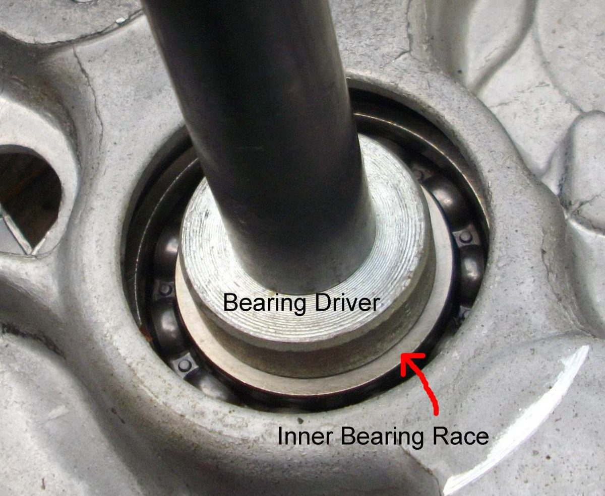

Wheel bearings are the sealed ball bearings pressed into each side of the wheel hub. The axle passes through them, with a spacer tube between them inside the hub.
What it does
The balls roll between an inner and an outer ring, so the wheel turns freely on the fixed axle. Rubber seals keep grease in and water out. Pressure washing, deep water and age let water in; the grease washes out and the races rust and pit. A worn bearing feels rough and lets the wheel rock, which affects braking and steering.
Signs it is worn or failing
- Wheel rocks side to side on the axle: Wheel moves sideways on the axle.
- Rumble or grinding that changes with speed, not engine revs: Rumbling or grinding from a wheel.
- Wobble: Wheel is buckled or wobbles. Check bearings before blaming the rim.
- Bike feels held back: Bike feels held back.
When to replace it
Replace if rough, noisy or loose when turned by finger with the wheel out. Replace both bearings in a hub together, plus the hub seals. Always fit new bearings once removed.
- Replace the bearings if there is any play. Replace them also if the hub is very hot after a ride and the brake is not dragging, or if the axle looks discoloured as if it was heated. Both mean the grease has failed and the bearings have overheated.
- Before a long trip, replace the bearings if the last change cannot be recalled.
What to match when buying
- The number printed on the bearing seal, for example 6202-2RS. The four digits set the size; a 6202 is 15 mm inside, 35 mm outside and 11 mm wide.
- The suffix shows sealing: 2RS (or 2RS1, 2RSH) means rubber seals both sides; 2Z means metal shields. For wheels, use sealed (2RS) unless the manual says otherwise.
- Fakes of famous bearing brands are common. Buy from an authorised dealer, check the printing is sharp and the box is not damaged or re-sealed. A cheap unbranded bearing from a known factory is better than a fake famous name.
Fitting notes
- Press or drive only on the outer ring with a driver of the right size. Never hit the inner ring or seal.
- Fit the spacer tube between the bearings, or the axle nut will crush them.
- Check: Check wheel bearings (home). Replace: Replace wheel bearings (workshop).
- Warming an aluminium hub gently with a hot air gun makes bearings come out and go in more easily.
- A bearing driven out with a drift or pulled with a puller is damaged and must be replaced. Tapered roller bearings can be cleaned and regreased, because the rollers are not driven.
- On cast wheels, keep the drift on the bearing and not on the casting. A slip can crack the hub. Some cast hubs take the centre spacer from one side only.
- Fit the bearing with the maker's marks facing out and drive it by the outer race only. Warm the hub and chill the bearing for an easy fit: Use heat and cold.
Reference (K-Light 125)
| Item | Value | PDF page |
|---|---|---|
| Front hub bearings | 6202-2RS | 130 |
| Rear hub bearings | 6303-2RS | 158 |